モデルタブ: 概要 - ビュー、エクスプローラー、パネル
モデルタブの概要: 1 つのモデルに 6 つのエリア - 表示とチェック、モデリング、UV、ウェイト、テクスチャペイント、アニメーション - があり、どのエリアにも同じビュー、シーンエクスプローラー、右側のパネル、タイムラインがあります。モデルはゲームと同じ方法で描画され、マウス、キー、レイアウトは選んだ操作モードに応じて 3ds Max または Blender と同じです。

モデルはこれまでどおり開きます (NPC、.glm、.pk3)。タブは 表示/チェック (モデルタブ: 表示とチェック) で始まります。ビューの上に並ぶエリアの行で モデリング (モデルタブ: モデリングとマップ用小道具)、UV (モデルタブ: UV 作成)、ウェイト (モデルタブ: Weights)、ペイント (モデルタブ: テクスチャペイント)、アニメーション (モデルタブ: アニメーションエリアのパネル) に切り替えます。ビュー、シーンエクスプローラー、タイムライン (モデルタブ: タイムライン) はどのエリアでも同じで、作業中もポーズは再生され続けます。モデルはすべての詳細レベルと一緒に専用のドキュメントに読み込まれ、変更していないモデルは以前とまったく同じ画像になります (Jedi Academy、Jedi Outcast、Movie Duels の models/players にある全モデルで確認)。
モデルがなくても、タブは読み込み後と同じ配置です: タブ・検索・フィルター付きのシーン エクスプローラ (グレー表示、ヒントと やり方を見る は空のツリーに表示)、グリッド・ViewCube・ヘッダー付きのビュー、タブとエリアのグループ (折りたたまれてグレー表示) を持つコマンド パネル。アクティブなビューの中央の モデルが読み込まれていません に NPC ブラウザー と .glm を開く… があります。
複数のモデルをタブで#
ビューの上には開いているモデルごとにタブがあり、kyle/model.glm のように (フォルダーとファイル) 名前が付きます。この行は 2 つ目のモデルを開くか、クリップボードにサーフェスがあると表示されます (モデルが 1 つならこれまでと同じ表示)。タブをクリックするとそのモデルに切り替わります。各タブはモデルのすべてを保持します: ファイル、GLA とアニメーション (現在のフレーム)、選択、元に戻す履歴、モディファイアスタックと付随ファイル、リグとコントロール リグ、ペイント、タイムライン、カメラ、ビュー。+、Ctrl+O、「モデル」グループの 新しいタブで開く で別のモデルを新しいタブで開きます (モデル ファイルまたはゲーム ファイルから)。すでに開いているモデルは二重に開かず、そのタブがアクティブになります。インポート はこれまでどおりアクティブなタブのモデルを置き換えます。タブの x で閉じます。未保存の変更がある場合は先に確認し、終了時には未保存の変更があるモデルごとに確認します。最後のタブは消えず、空になります。タブの右クリック: タブを閉じる、他のタブを閉じる。
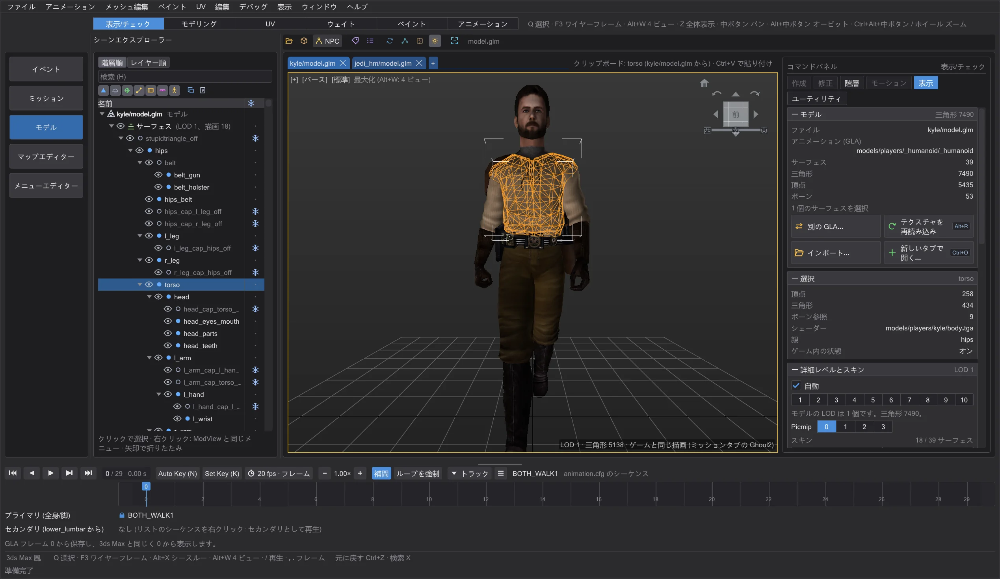
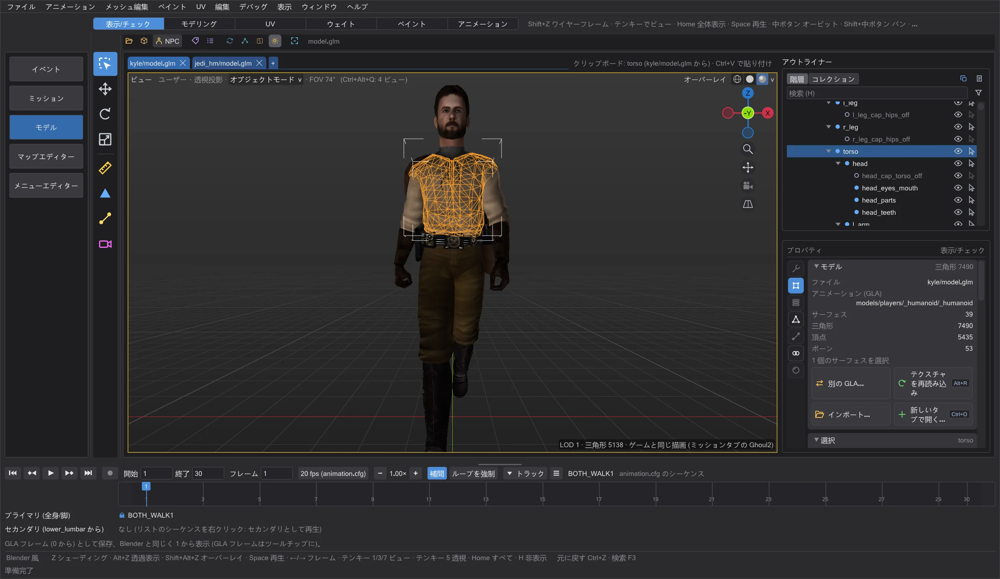
サーフェスを別のモデルにコピー: シーン エクスプローラでサーフェスを右クリックして コピー を選びます (Ctrl+C は選択したサーフェスをコピー)。タブの行の右側にクリップボードの内容が表示されます。同じモデルまたは別のモデルで、サーフェスの右クリック メニューの これの子として貼り付け (Ctrl+V: 選択したサーフェスの下に) を選ぶと、その子として貼り付けます (そのモデルの元に戻す 1 ステップ)。ウェイトは同名のボーンへ。モデルにないボーンは、そのウェイトを最も近い既存の親ボーンに渡し、メッセージにすべて表示されます - 黙って失われるものはありません。すべての LOD も移ります (モデルより多い分は省き、足りない分は最も粗い LOD で埋めます)。コピー元に表示されていたシェーダーとモディファイアスタックも一緒です。すでにある名前には _1、_2 が付きます。ゲームの制限 (サーフェスあたりの頂点数、サーフェスあたり 32 ボーン、頂点あたり 4 ウェイト) を確認し、メッセージに表示します。.md3 小道具には固定で貼り付けます。アニメーション エリアでは Ctrl+C と Ctrl+V は Blender と同じくポーズをコピー・貼り付けします。
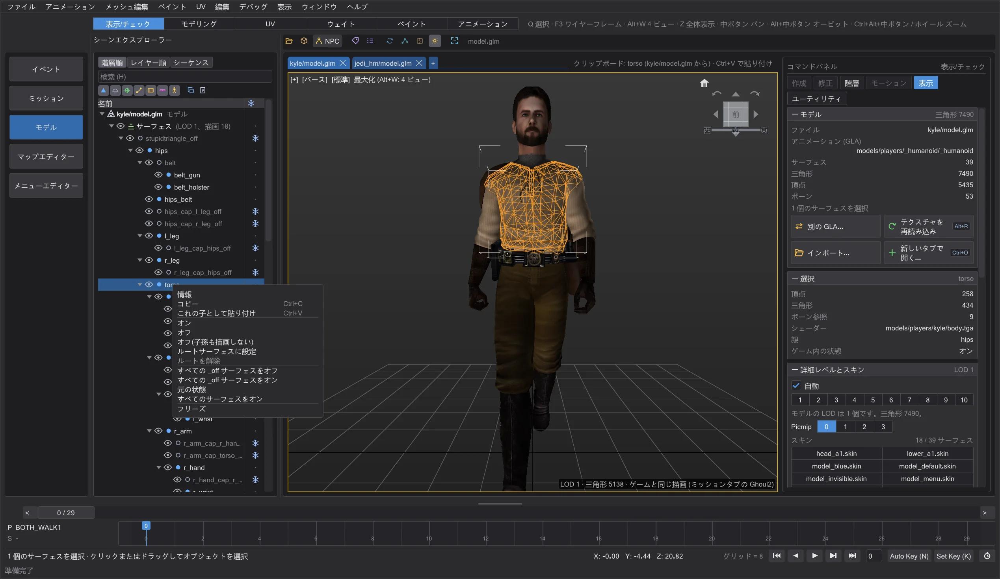
シーンエクスプローラー#
シーンエクスプローラー にはサーフェス (階層順 または レイヤー順)、タグ、スケルトンのボーンが表示されます。検索 (H) で名前を絞り込みます。灰色のサーフェスは描画されません。右クリックは ModView やゲームと同じように働きます (G2_SetSurfaceOnOff、G2_SetRootSurface)。オフ はサーフェスを隠して子は残し、オフ(子孫も描画しない) は枝全体を隠し、ルートサーフェスに設定 はこの枝だけを描画し、元の状態 ですべて元に戻します。スキンの name,*off 行も同じようにサーフェスをオフにします。オレンジの点が付いたボーンはゲームコードが参照します。
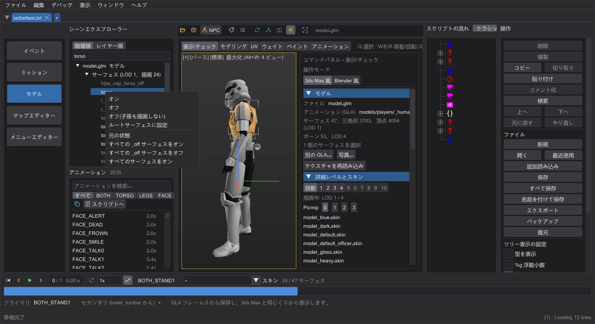
タグ (たとえば *r_hand) かボーンを右クリックして モデルを取り付け を選ぶと、ゲームアーカイブからモデル (セイバー、武器、頭など) を G2API_AttachG2Model と同じように取り付けます。タグに付けるとタグの三角形に、ボーンに付けるとボーンに従います。グループ 取り付け に一覧が出て、取り外せます。
すべてを 1 つのツリーに: 一番上にモデル、その下に階層付きの サーフェス、取り付けたモデル付きの タグ、入れ子のツリー (親 - 子) の ボーン、コントロール リグのハンドル - タブのどのエリアでも同じツリーです。検索 (H) で全行を名前で絞り込みます。3ds Max と同じくツリーの下にヒント行はなく、ヒントはツールチップにあります。
シーケンスは独自のタブに: 階層順 と レイヤー順 の隣の 3 番目のタブ シーケンス に animation.cfg のすべてのシーケンスが、検索欄 (名前の一部、大文字小文字を区別せず入力中に絞り込み; エクスプローラ上で Ctrl+F)、グループ (すべて、BOTH、TORSO、LEGS、FACE)、名前・フレーム・ループの列付きで並びます - 幅はドラッグ、見出しのクリックで並べ替え。クリックまたはダブルクリックで再生、右クリック メニューでセカンダリとして再生; プライマリとセカンダリには P と S の錠が付きます。行はマップ GLA のスロットへドラッグできます。ツリーではシーケンス数の付いた項目からこのタブへ移れます。
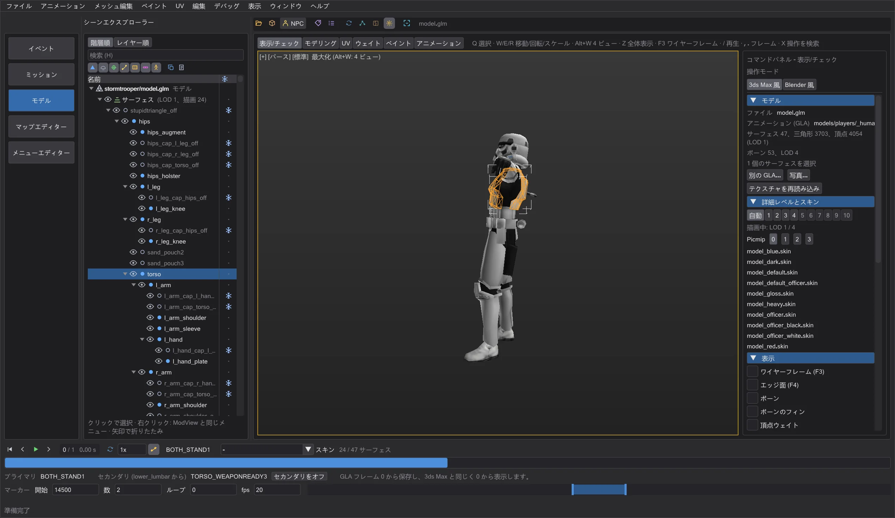
行の並びは操作モードに従います。3ds Max 風(シーンエクスプローラー):折りたたみの矢印・目・記号が名前のすぐ前に並び、階層ごとに記号 1 つ分だけ字下げされます。フリーズ 列(雪の結晶)でフリーズします。列見出しは幅をドラッグでき、名前 をクリックすると昇順・降順・階層の順に切り替わります。検索の下の記号の行で行の種類(サーフェス、キャップ、タグ、ボーン、シーケンス、取り付けたモデル、リグのハンドル)を表示/非表示にします(Ctrl+クリック: この種類のみ)。Blender 風(アウトライナー、切り替えは 階層 / コレクション):ツリーは左、目と「選択可能」の矢印は右の固定列、種類は検索の隣の フィルター ポップオーバーにあります(ボーンをフラットな一覧で表示 と アルファベット順に並べ替え 付き)。ツリーは横にスクロールしません。深いボーンは間隔が詰まり、収まらない名前は「...」で終わってツールチップに全体が表示され、行の情報(頂点、三角形、シェーダー、親、ゲーム内の状態。右クリックメニューの 情報 でも表示)も出ます。Shift+クリックで、最後にクリックしたサーフェスからここまでをすべて選択します。サーフェスの前の印: 点 = オン、輪 = オフ、斜線付きの輪 = 子ごとオフ、名前の後ろの錨 = ルートサーフェス。
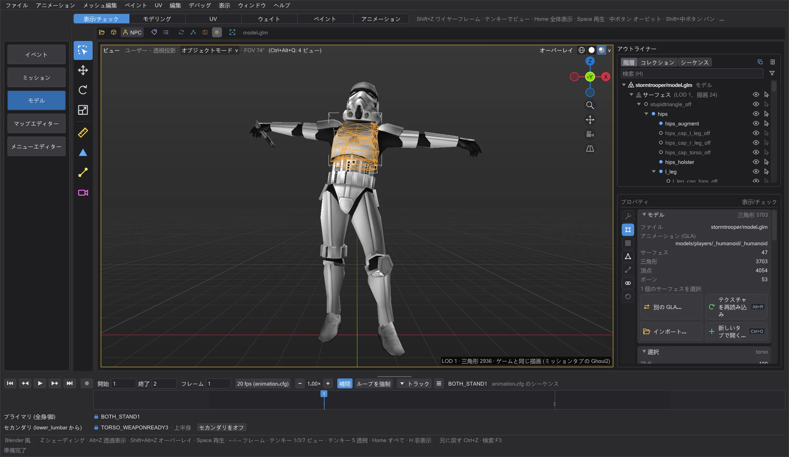
レイヤー順(Blender と同じ: コレクション)は同じ行をレイヤーに分けます: ボディ、キャップ (_off)、タグ、ボーン、取り付け、その他の詳細レベル(LOD 2、LOD 3 …)。レイヤーの目はその行すべてをビューでのみ隠します。ゲームはそのままで、ゲームが描くものは引き続きサーフェスのオン/オフで切り替えます。雪の結晶(Blender と同じ: 矢印)はフリーズです。フリーズした行は表示されたままです。ツリーでのクリックは 3ds Max 風でのみ選択し (Blender 風では選択しません)、ビューでのクリックは後ろのサーフェスに抜けます (3ds Max と同じ)。選択枠も通り過ぎ、後ろに何もなければステータス行に理由が表示されます。キャップは最初からフリーズされているので、フィギュアをクリックしてもキャップは選ばれません。LOD レイヤーの目はその詳細レベルを表示します。どの行にも同じ 2 つのスイッチがあり、目を Ctrl+クリックするとその行だけを表示し、雪の結晶を Shift+クリックすると子も一緒に切り替えます。
シーン エクスプローラのフリーズした行 (3ds Max 風): フリーズした行をクリックすると、3ds Max のシーン エクスプローラと同じく選択できます。たとえば行の右クリック メニューや「すべての操作を検索」の 選択をフリーズ解除 でフリーズを解除できます。ビューでのクリックは引き続きフリーズしたサーフェスを通り抜け、その後ろのものを選択します。Blender 風では「選択可能」の矢印がオフの行はこれまでどおり選択できません。
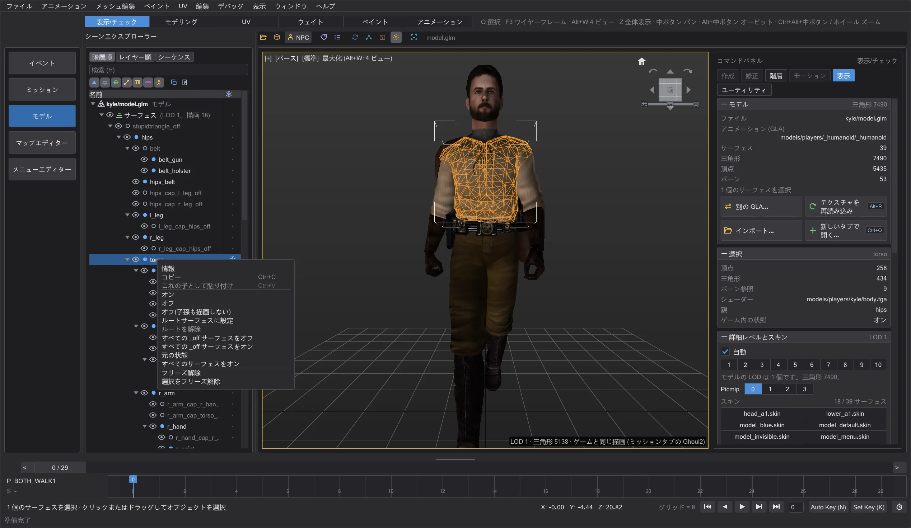
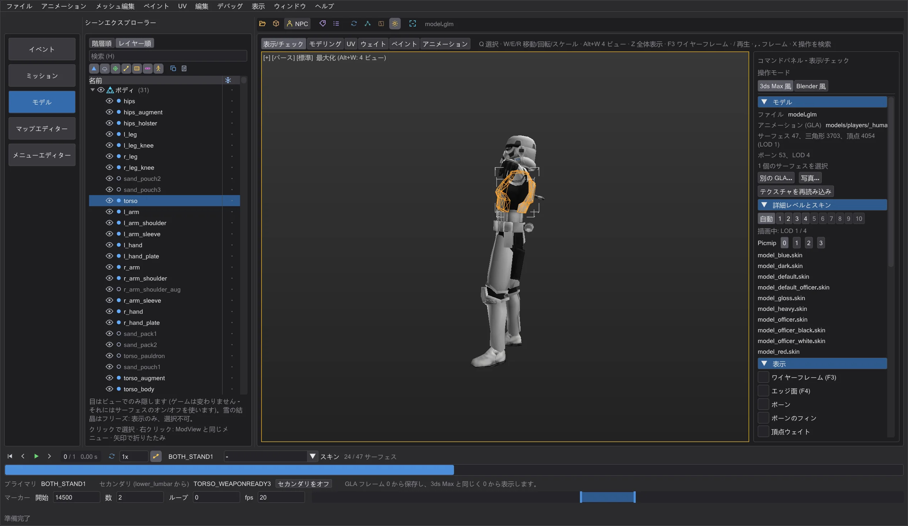
セカンダリシーケンスは、ゲームの SET_ANIM_UPPER と同じく lower_lumbar から上の上半身で再生されます (別の開始ボーン: ボーンを右クリック)。補間 はゲームと同じく 2 つのフレームの間を補間します。
シーンエクスプローラーの各行は種類を示します: モデル、タグ、ボーン、ルートボーン、アタッチ、リグのハンドル、シーケンス。LOD はサーフェスの見出しにあります。サーフェスの前の印はゲーム内の状態を示します (点 = オン、輪 = オフ、斜線付きの輪 = 子ごとオフ)。目をクリックすると行を子と一緒に非表示にし、Ctrl か Alt+クリックでその行だけを表示します。すべて表示 は右クリックメニューと操作検索にあります。非表示の行は灰色で、選択・ペイント・写真はそれを飛ばします。Blender と同じ: H、Alt+H、Shift+H。
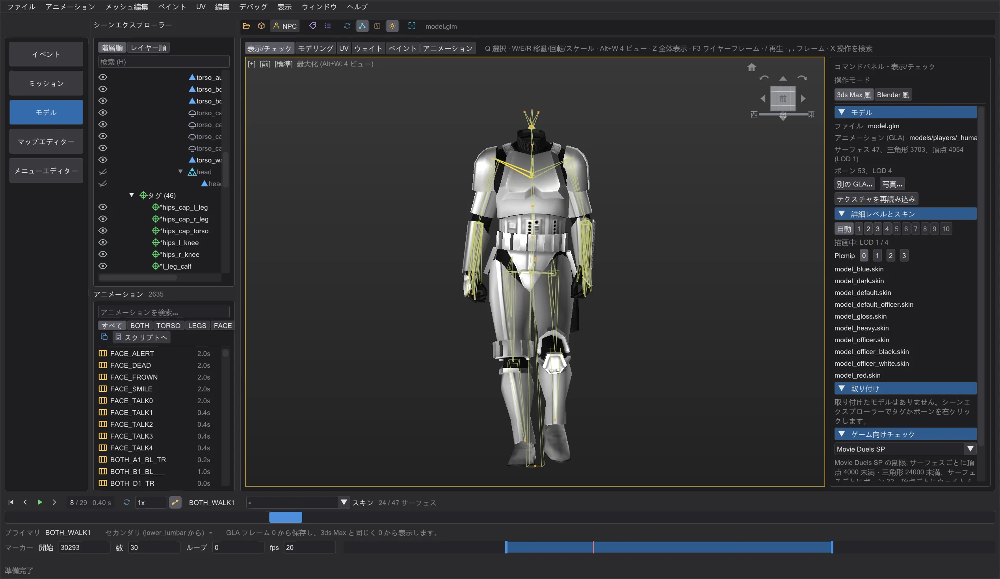
コマンドパネル#
右のパネルは操作モードに従います。 3ds Max 風: 作成、修正、階層、モーション、表示、ユーティリティ のタブを持つ コマンドパネル で、グループは平らな見出しバーです。Blender 風: プロパティ で、左に縦一列のアイコン(ツール、オブジェクト、モディファイアー、データ、ボーン、コンストレイント、マテリアル - 名前はツールチップに表示)が並び、グループは角の丸いパネルです。タブの各エリアは自分のタブを選びます。表示/チェック は 表示 または オブジェクト を、アニメーション は モーション または ボーン を開き、そこにそのエリアのすべてのグループを縦に並べます。ほかのタブにはそれぞれの担当分が表示されます。表示/チェック では 階層 に取り付けたモデル、ユーティリティ にゲーム向けチェックがあります。現在のエリアに項目がないタブはグレー表示になります。
小さいウィンドウ (高さが約 50 行より低いとき、たとえばプログラムの最小サイズ) では、コマンドパネル のタブを文字で並べると 2 段か 3 段になります。そのため 3ds Max 風 ではタブをアイコンだけで 1 列に並べます。Blender 風 の プロパティ の列と同じで、タブの名前はツールチップに表示されます。パネルはグループのための場所を保てます。
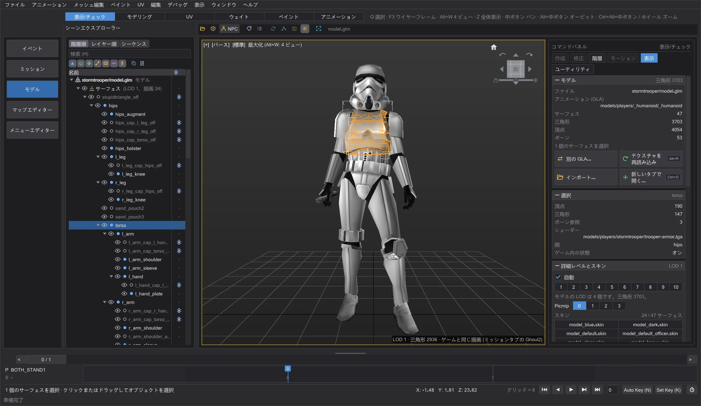
どのグループも同じ形です。 見出しをクリックするとグループが折りたたまれ、見出しの右には短い情報(三角形数、描画中の LOD、取り付けたモデルの数、チェックの結果 - 緑の 問題なし または件数付きの赤)が表示されます。ボタンは同じ幅の 2 列のグリッドに並び、それぞれにアイコンと、キーがある場合は操作モードのキーが小さなキーキャップで付きます。グループの主ボタンはアクセントカラーで強調されます。値は表(左に名前、右に値)、LOD 1-10 や Picmip 0-3 のような選択はつながった 1 行、ヒントは情報アイコン付きの枠に表示されます。パネルが狭くても何も切れません。テキストは折り返し、グリッドは 1 列になります。
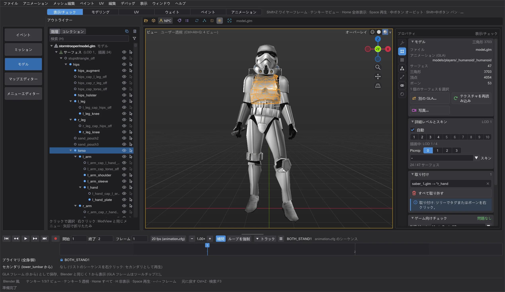
幅、エリア、操作モード。 ビューとパネルの境目をドラッグするとパネルの幅を変えられます(ダブルクリックで既定の幅に戻ります)。幅はプログラムが記憶します。タブのエリア - 表示/チェック、モデリング、UV、ウェイト、ペイント、アニメーション - は、同じ幅のフィールドが並ぶ 1 行として、エクスプローラー、ビュー、パネルの上にタブ全体の幅で表示されます。その横には、このエリアでの操作モードのキーとマウス操作の短いヒントが表示されます。操作モード自体は、タブのステータス行の左にある 3ds Max 風 / Blender 風 をクリックするか、ビューのヘッダーのメニュー(操作モード)、設定、またはすべてのアクションの検索から切り替えます。
ビューのヘッダー、ViewCube とギズモ#
各ビューの左上には 3ds Max のビューポートラベルメニューと同じヘッダーがあります。各フィールドはマウスを重ねると明るくなり、左クリックか右クリックでメニューを開きます。[+]: ビューポートを最大化 (Alt+W)、全体表示 (Z)、ビューに表示するもの (グリッド G、床、原点、バウンディングボックス、選択ブラケット J、統計 7、高さ定規、単色の背景)、サブメニュー ボーンとチェック (ボーン、フィン、法線、タグ、クラック検出、頂点番号と三角形番号)、ViewCube、視野角。[パース]: 3ds Max のキー (P、U、T、B、F、L) で視点を切り替え、ホーム (フィギュアを正面から) もあります。[標準]: このビューのシェーディング - ワイヤーフレーム (F3)、エッジ面 (F4)、両面、白いテクスチャ、頂点ウェイト、シルエット。4 ビューではビューごとにシェーディング、グリッド、統計を持ちます。ビューの右クリックメニューにも同じメニューがあり、すべての操作を検索 (X) (X) で各スイッチを検索でき、ツールチップに場所が表示されます。選択サーフェスが必要なスイッチ (番号、クラック検出) は、選択するまでビューにその旨を表示します。
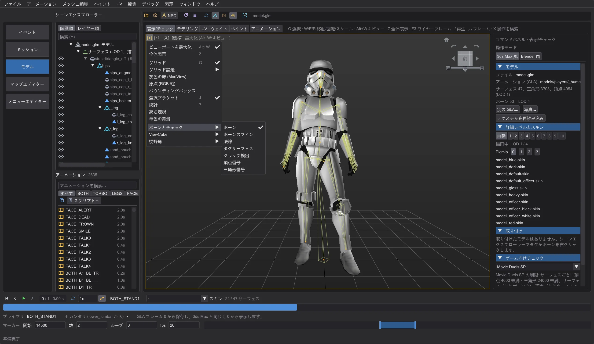
アクティブなビューの右上の ViewCube は、どこから見ているかを示し、3ds Max のものと同じように動作します。ターゲットは 26 個 (6 面、12 辺、8 角) で、マウスの下のターゲットが明るくなり、クリックすると短いアニメーションでそこへ回転します。投影は変わりません。パースビューはパースのまま、平行投影ビューでは面がそのビュー (前、上 ...)、辺や角が自由な 平行投影 ビューになります。立方体をドラッグすると周回します。下のコンパスリングには北、東、南、西があり、リングをドラッグすると垂直軸まわりだけ回転し、文字をクリックするとその方向から見ます。面を正面から見ているときは、4 つの矢印が隣の面へ、2 つの曲がった矢印がビューを 90 度ロールします。左上の家は Home で、カメラがフィギュアの正面・中央へ移動します。右クリックで Home、現在のビューをホームに設定、平行投影 を選べます。ホームに設定したビューはフィギュアごとに記憶され、再起動後も保持されます。ホームをリセット で開始ビューが再びホームになります。マウスを重ねるまで立方体は半透明です。フィギュアは .glm の中で -Y を向いている (ゲームでは +X に回転) ため、前ビューに顔が映ります。フィギュアの読み込み後、Alt+W の後、ビューのリセット時も同じです。3ds Max と同じく北は「前」の面の後ろにあります。[+] > ViewCube で立方体やコンパスをオフにしたり、4 ビューすべてに表示したり、北の角度 を設定したりできます。
ViewCube は後ろにあるものを隠します: キューブの後ろの方位文字は隠れてクリックできず、見えている面・エッジ・コーナーのクリックは常にリングより優先され、ビューは揺り戻しなく滑らかに回ります。ビュー上のすべてのラベル - ヘッダー、ホーム、方位付き ViewCube、ヒント、計測値 - は背景の明るさに応じて白または黒になり、シルエット・白・どの色の上でも読めます。オブジェクト レベルではモデルは 3ds Max や Blender と同じくワイヤーフレームなしでシェーディング表示され、エッジはサブオブジェクト レベルで表示されます (Blender の編集モードと同じく細く暗く)。ゴーストは アニメーション エリアだけで描かれ、そのスイッチはビューの [+] メニューにもあります。
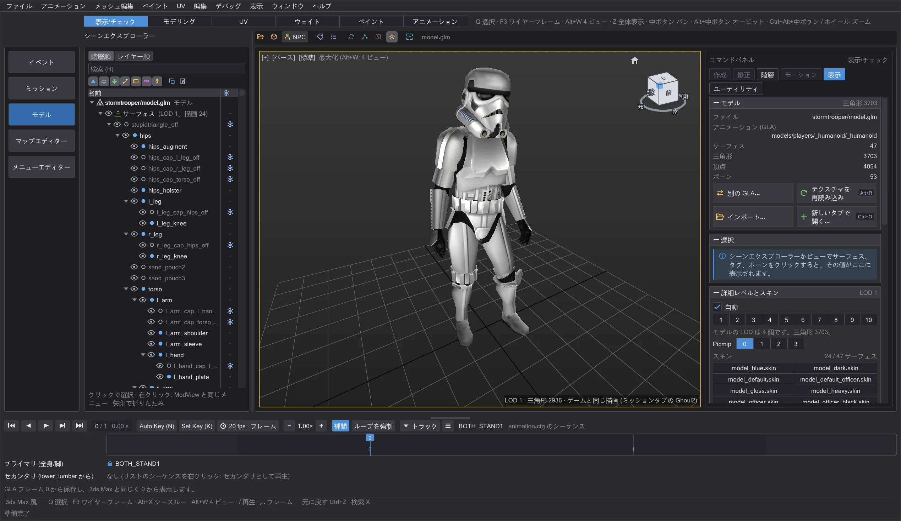
Blender モードのヘッダーは Blender の 3D ビューと同じ配置です: 左にメニュー ビュー (選択を表示、すべて表示、透視/平行投影、テンキー付きの 視点、周回・ロール・反対側の ナビゲーション、4 分割表示)、右に オーバーレイ と ビューポートシェーディング の 3 つのボタン (ワイヤーフレーム、ソリッド、マテリアルプレビュー) と、裏面非表示とシルエットのドロップダウン。その下にナビゲーションギズモがあります。軸をクリックするとその方向から見て、もう一度クリックすると反対側から、ドラッグで周回します (Blender の Auto Perspective のように軸ビューは透視になります)。その下にズーム、移動、カメラビュー (淡色 - モデルタブにはシーンカメラがありません)、透視/平行投影。テンキーは Blender と同じです: 4/6/8/2 で 15 度周回、Shift+4/6 でロール、9 で反対側、Ctrl+1/3/7 で後・左・下、Shift+Z でワイヤーフレーム、Ctrl+` でギズモ。
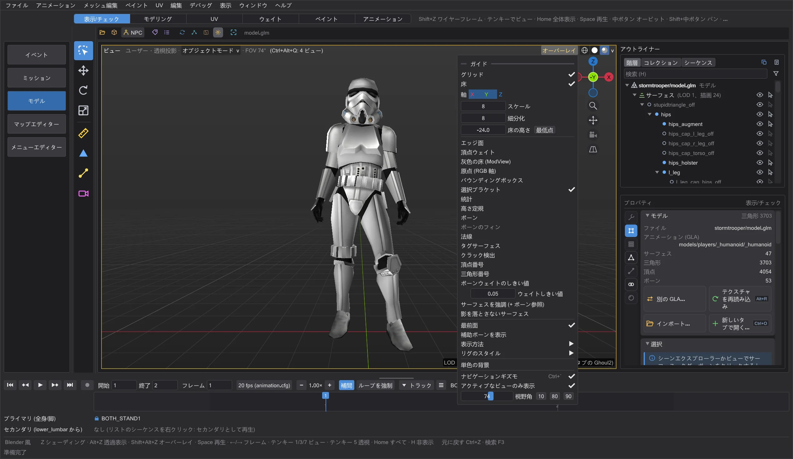
ViewCube は WhiteoutDex (max_viewcube.h、BSD 3-Clause ライセンス、Copyright (c) 2026 WhiteoutDex Contributors) と WhiteoutFlakes (BSD 3-Clause ライセンス、AI 派生物の注記付き、Copyright (c) 2026 Fernando Sahmkow) に由来します。ナビゲーションギズモは JK Studio 独自の描画で、Autodesk や Blender のグラフィックは使っていません。
床グリッド#
どのビューにも最初から 3ds Max のホームグリッドと同じグリッドが表示されます: グリッド間隔の細い線、濃いメジャーライン、黒いワールド軸。パースでは床の上にあり、7 本で終わります (Max: Perspective View Grid Extent)。上、前、左などのビューではビュー平面にあり、ビュー全体を埋め、ズームで変わります - 引くとメジャーラインが新しい線になり、寄っても間隔より細かくなりません (Max と同じ)。フィギュアはグリッドを隠します。[+] > グリッド (G) でこのビューの表示を切り替えます。[+] > グリッド設定 で グリッド間隔 (8 JKA 単位、マップエディタのグリッドと同じ)、N 本ごとにメジャーライン (8: 64 単位ごとにメジャーライン - プレイヤーの高さ)、パースのグリッド範囲、床の高さ を設定します。既定は -24 で、JKA フィギュアの足の位置です。3ds Max と Blender はグリッドを Z = 0 に置きますが、JKA のフィギュアは原点が腰にあります。最低点 は床をポーズ中のフィギュアの最低点の下に置きます (原点が床にある小道具なら 0)。間隔とメジャーラインは設定 (モデルタブ: グリッド) にもあります。ModView の灰色の床 (灰色の床 (ModView)) は別のスイッチのままで、グリッドと一緒に表示できます。
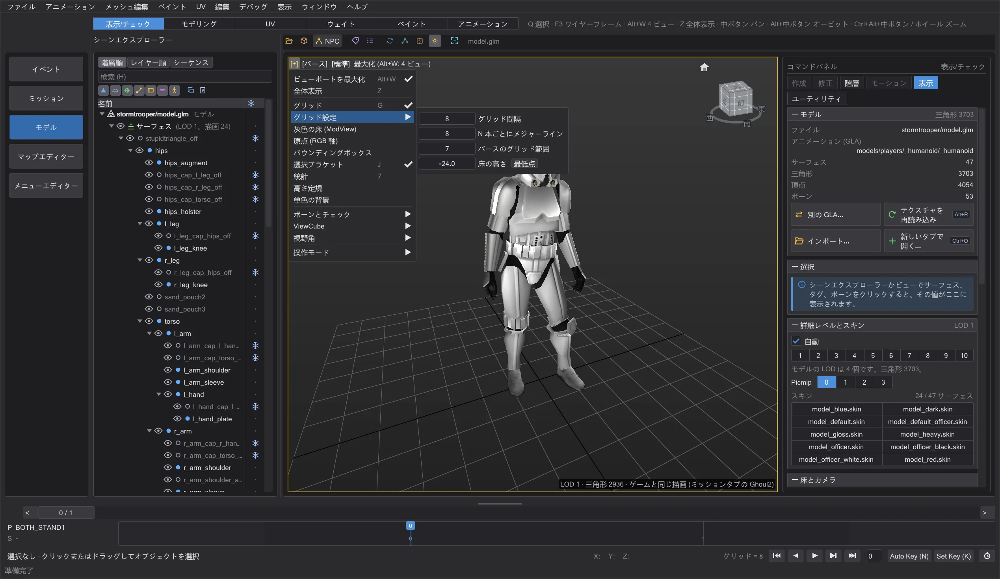
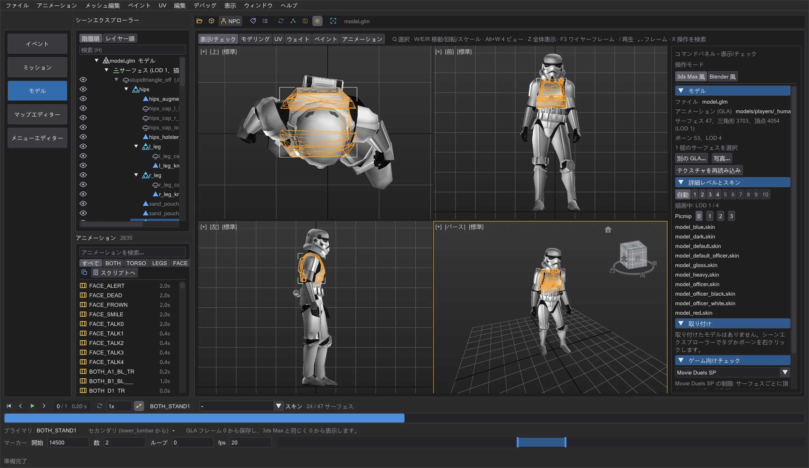
Blender モードでは、グリッドの見た目と動作は Blender のオーバーレイと同じです: 床は地平線に向かってフェードアウトして果てしなく見え、X 軸は赤、Y 軸は緑 (オンにすると Z は青)。側面ビューでは細分化がズームで変わります。オーバーレイ > ガイド には グリッド (側面ビュー)、床 (パース)、軸 X Y Z、スケール、細分化 があります - ビューごとにスイッチを持ち、スケールと細分化は上の間隔とメジャーラインです。
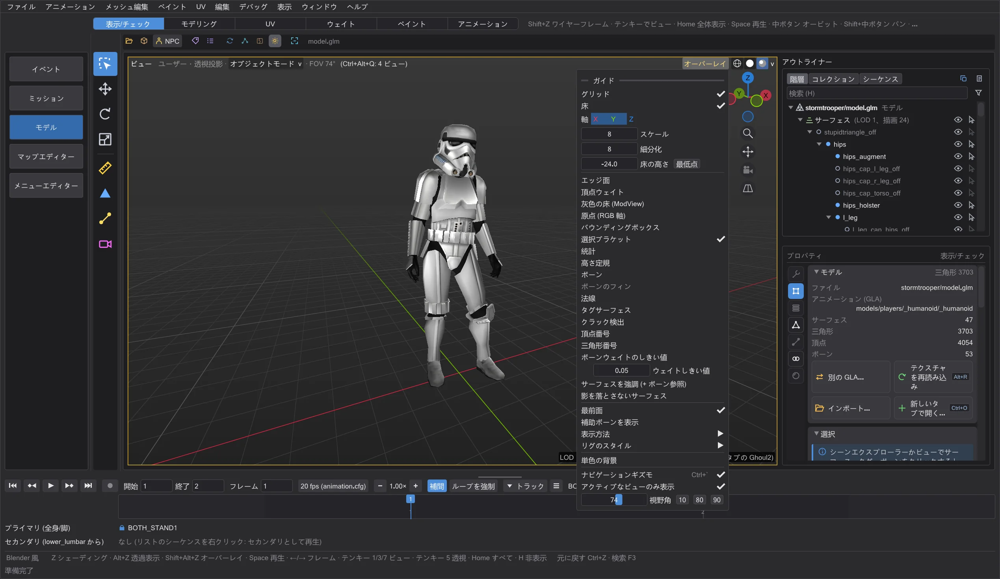
ビューのナビゲーション#
マウスとキーは、設定したモードのプログラムとまったく同じようにビューを動かします (設定 > モデルタブ > 操作): 3ds Max 風または Blender 風。ビューの上の行に主な操作が並び、すべてのコマンドはビューヘッダーのメニュー ([ビュー名] > ナビゲーション、Blender モードでは View > ナビゲーション)、右クリックメニュー、検索 (X / F3) にもあります。パンではシーンがマウスに正確に追従し、ズームとオービットはビュー中央の点を保ちます。
3ds Max 風
| マウス / キー | 内容 |
|---|---|
| 中ボタン | パン: ビューがマウスに追従します。Shift を押すと最初に動かした方向だけ。 |
| Alt+中ボタン | ナビゲーション > オービットの中心 で選んだ点を中心にオービット (既定は選択、選択がなければビューの中心)。上・前・左などのビューは自由な平行投影ビューになります。Shift で最初に使った軸だけ。 |
| Ctrl+Alt+中ボタン | ズーム: 上で近づき、下で離れます。 |
| ホイール, [ ], Ctrl+= Ctrl+- | マウスの下の点を中心に段階的にズーム (マウス位置を中心にズーム (平行投影) / マウス位置を中心にズーム (パース)。オフならビューの中心)。 |
| Z, Ctrl+Alt+Z | 全体表示: Z は選択 (なければフィギュア全体) をすべてのビューに、Ctrl+Alt+Z はフィギュア全体をアクティブビューに、Ctrl+Shift+Z はフィギュア全体をすべてのビューに合わせます (全ビューで全体表示 (Ctrl+Shift+Z)) - 3ds Max と同じです。やり直しはそこでは Ctrl+Y です。Blender 風モードでは Ctrl+Shift+Z はやり直しのままです。 |
| Ctrl+Alt+Shift+Z, Alt+Shift+Z | 2 倍に拡大 / 2 倍に縮小。 |
| Alt+Z, Ctrl+P, Ctrl+R, Ctrl+W | 3ds Max 右下のボタンと同じナビゲーションモード - ズーム、パン、オービット、領域ズーム: 左ボタンでドラッグします。モード名はビューの下に表示され、右クリックか Esc で終了します。オービットは黄色い円を表示: 内側は自由に回転、4 つのハンドル上は 1 軸のみ、外側はロール。領域ズーム: ドラッグした四角形がビュー全体に広がります。 |
| I | ポインタへパン: マウスの下の点がビューの中央に来ます。 |
| Shift+Z, Shift+Y | アクティブビューの直前のビュー変更 (パン、ズーム、回転、ViewCube) を元に戻す / やり直す - ビューごとの履歴で、Ctrl+Z とは独立。 |
| T B F L P U, V | 上・下・前・左・パース・平行投影ビュー。V でマウス位置に全ビューのメニューを開きます。 |
| Alt+W, Alt+Home, Ctrl+Alt+V | 1 ビューまたは 4 ビュー。ホームビュー (ViewCube のホーム)。ViewCube の表示 / 非表示。 |
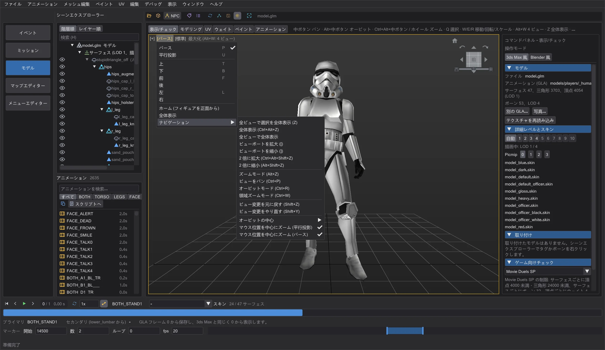
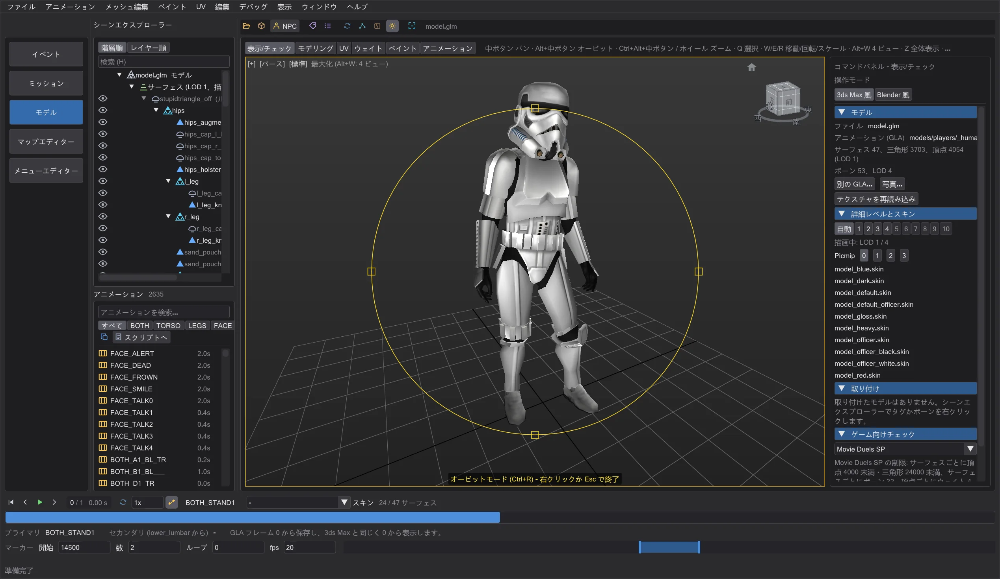
Blender 風
| マウス / キー | 内容 |
|---|---|
| 中ボタン | オービット (ターンテーブル): 左右は垂直軸まわり、上下はフィギュアの上を越えて - 真上も越えられます。前・右・上などのビューはパースになります (自動パース)。ドラッグ中に Alt を押すと軸や対角方向のビューにスナップします。 |
| Shift+中ボタン | パン: ビューがマウスに追従します。 |
| Ctrl+中ボタン | 上下ドラッグでズーム (Blender のドリーズーム)。 |
| ホイール, Numpad + Numpad -, Ctrl+= Ctrl+- | 段階ズーム: 1 段で距離を 1.2 で割るか掛けます。ビューの中心が基準 (マウス位置でズーム オンでマウス位置へ)。 |
| Alt+中ボタン | ドラッグでビューを 4 分の 1 回転させ、隣の軸ビューへ (右・左・上・下)。クリックでマウスの下のフィギュア上の点をビューの中央に。 |
| Numpad 1 Numpad 3 Numpad 7, Numpad 5, Numpad 9 | 前・右・上 (Ctrl で反対側)。平行投影でなめらかに回転します。Numpad 5 は同じ向きのままパースと平行投影を切り替え、Numpad 9 は反対側。 |
| Numpad 4 Numpad 6 Numpad 8 Numpad 2 | 15 度ずつオービット (4 と 6: カメラが左右へ、8 と 2: 上下へ)。Shift で 4 と 6 はロール、Ctrl で 4 つのキーはパン。 |
| Numpad ., Home, Shift+C | 選択を表示 (選択なしでは何もしません)、すべて表示、原点を含めてすべて表示。向きはそのまま。 |
| `, Shift+B, Ctrl+Alt+Q | マウス位置のビューパイメニュー (左・右・下・上・前・後・選択を表示)。領域ズーム - 四角形をドラッグするとビュー全体に広がります。4 分割表示は上、パース、前、右。 |
| Gizmo | 右上のギズモ: 軸をクリックでそのビュー (軸をまっすぐ見ているとき、中央は反対側)、ドラッグでオービット。下のボタンはドラッグでズームとパン、パースと平行投影の切り替え。 |
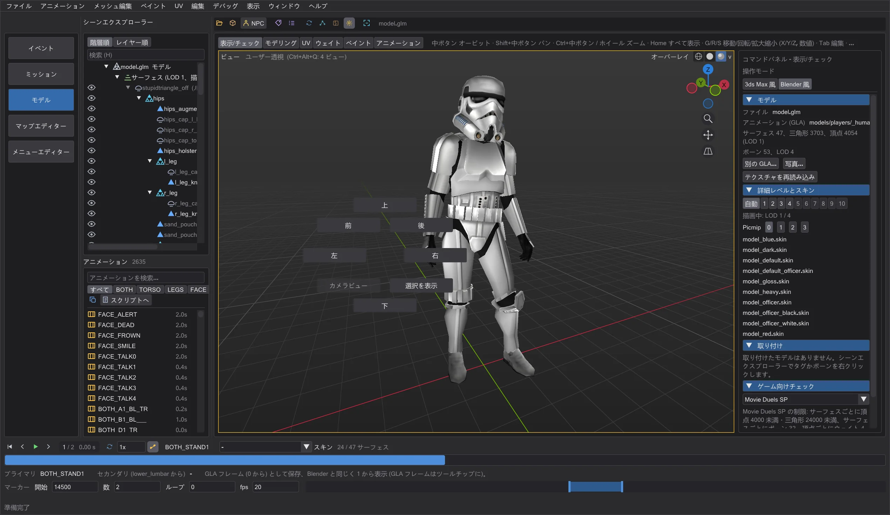
ナビゲーション には設定もあります: 3ds Max 風では オービットの中心 (ビューの中心 (Orbit)、選択 (Orbit Selected)、サブオブジェクト選択 (Orbit SubObject)、マウスの下の点 (Orbit Point of Interest)) と 2 つのスイッチ マウス位置を中心にズーム (平行投影) / マウス位置を中心にズーム (パース)、Blender 風では 選択部分を中心に回転 と マウス位置でズーム (Blender と同じく既定でオフ)。未実装: 3ds Max の SteeringWheels とウォークスルー、Blender のウォーク/フライとトラックボール回転、カメラビュー。